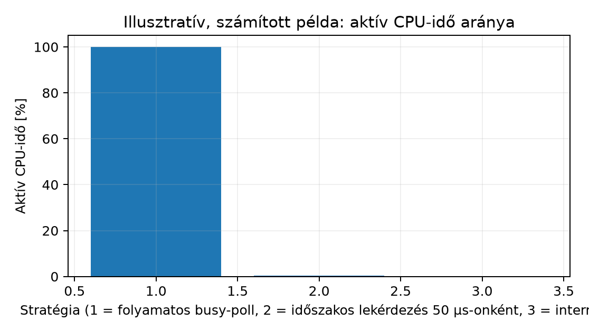

A qemu-system-arm -machine mps2-an385 gépen futó
firmware-ünknek egy soros porton másodpercenként néhány bájtot kell
fogadnia, közben 1 ms-os időzítéssel mintát kell vennie, és alkalmanként
egy GPIO-lábon gombnyomást kell érzékelnie. A főciklus
while (1) testében vagy ismételten beolvassuk a periféria
állapotregiszterét, vagy a periféria jelez a processzornak, amikor
teendő van. Az első megoldás néhány sorból áll, de a CPU-t folyamatosan
lefoglalja. A második kevesebb ciklust pazarol, viszont bonyolultabb:
megszakítás-prioritás, ISR-szerződés, megosztott állapot és
versenyhelyzetek kerülnek a képbe. Ez az alfejezet a két stratégia
számszerűsíthető tradeoffjait adja meg, hogy a hallgató egy konkrét
feladatról önállóan el tudja dönteni, melyik illik rá — és a fejezet
három konkrét esetére konkrét választ kap.
Polling (lekérdezéses I/O): a CPU egy ciklusban
ismételten beolvassa egy periféria állapotregiszterét (pl.
STATE RXBF bitjét), és addig nem lép tovább a
cikluson, amíg a várt feltétel nem teljesül. A periféria sosem
kezdeményez; kizárólag a szoftver kérdez.
Interrupt-vezérelt I/O: a periféria kérésére az NVIC kivételt vált ki, a processzor az aktuális utasításfolyamot félreállítja, elmenti a szükséges regisztereket, majd az ISR (interrupt service routine) fut le. A vezérlést nem a szoftver kérdező mintája, hanem a hardver eseménye indítja. A belépés latenciáját és összetevőit a Megszakítás-latencia mérése és korlátai tárgyalta.
Hybrid minta: a szoftver egy rövid, jól definiált ablakban pollol (például miután az első bájt megérkezéséről megszakítás értesített), majd a maradék bájtokat interrupt-vezérelten szedi ki a FIFO-ból. Ez a minta a burstös eseményekre ad jó választ.
CPU-kihasználtság: az az arány, ameddig a CPU hasznos munkát végez az összes eltelt ciklushoz képest. Polling esetén a várakozó ciklusok is elhasználódnak.
Energiafogyasztás: az órajel aktív tartományában a
CPU dinamikus teljesítményfelvétele az aktív ciklusok arányával
skálázódik; az WFI/WFE utasításokkal alvó
állapotba vitt mag kevesebbet fogyaszt. Az interrupt-vezérelt minta ezt
a lehetőséget természetesen kihasználja, a tiszta polling nem.
A polling és a megszakítás nem ellentétpár, hanem a reakcióidő és az erőforrás-fogyasztás két különböző pontja ugyanazon a spektrumon.
1) Latency (reakcióidő). Polling esetén a
legrosszabb eset
,
ahol
a poll-ciklus periódusa (ideális esetben az az idő, amíg a
while-test egy teljes iterációja újra a STATE
olvasásához ér). Az átlagos késleltetés
,
ha az esemény egyenletesen véletlen. Interrupt-vezérelt esetben a
késleltetés lényegében a
belépési latencia plusz az ISR első utasításainak futási ideje. A
polling ezt a paramétert tehát csak úgy tudja rövidíteni, ha a ciklusunk
sűrűbb — ami arányosan több energiát és CPU-t visz el.
2) CPU-kihasználtság. A pollingnak két, külön
számolandó modellje van. Folyamatos busy-poll esetén
(mint a lenti poll_loop) a CPU minden várakozó ciklust
elhasznál, a teher mindig a teljes órajel. Időszakos
lekérdezés esetén a CPU
időközönként egyszer ellenőriz:
idő alatt nagyjából
(darab) olvasás történik, akkor is, ha közben nem jött esemény.
Interrupt-vezérelt esetben a processzor WFI-vel alhat, és
csak eseményenként ébred: a pluszköltség eseményenként körülbelül
,
ahol
a kilépési szekvencia. Nagy eseménysűrűségnél
(
néhány ezer/másodperc) az interrupt-overhead eseményenként dominálhat,
és polling olcsóbb lehet; ritka eseményeknél viszont az interrupt
nyilvánvalóan nyer.
3) Energiafogyasztás. A két stratégia energiamérlege akkor nyílik szét igazán, ha a CPU-nak van alacsony fogyasztású alvó módja. A tiszta polling ciklus közben a mag aktív órajelet fogyaszt. Az interrupt-vezérelt minta tipikus szerkezete:
while (1) {
process_pending_events();
uint32_t saved = __get_PRIMASK();
__disable_irq();
if (!events_pending())
__asm volatile ("dsb\n\twfi" ::: "memory");
__set_PRIMASK(saved);
}Az events_pending() az alkalmazás megosztott jelzőit
vizsgálja; a CMSIS PRIMASK-műveletekkel védett újraellenőrzés és
WFI megakadályozza az elveszett ébresztést. A főciklusba
engedélyezett megszakításokkal lépünk.
A WFI (Wait For Interrupt) és a WFE (Wait
For Event) részletek: az WFI bármely engedélyezett és
prioritásban megfelelő megszakításra felébred; a WFE egy
esemény-regiszter bitjére is (többprocesszoros szinkronizációhoz). A
labor WFI-je egy megszakításra váró (alvó)
állapot: a mag leáll, amíg egy engedélyezett megszakítás fel nem
ébreszti. Ez nem azonos a gyártófüggő mélyalvással (Deep Sleep,
SCR.SLEEPDEEP, órajel-/tápkapuzás), amelyhez külön
konfiguráció kell; a példakód csak a WFI-t hajtja végre,
mást nem konfigurál, és a QEMU-ban a várakozásból fizikai fogyasztásra
nem következtethetünk. Az alvó mag fogyasztása tipikusan töredéke az
aktívénak, így ha az események ritkák, az interrupt-vezérelt minta
energia szempontból egyértelműen kedvezőbb. Ha viszont az események
sűrűn jönnek, az alvás és az ébredés közötti átmenetek tranzíciós
veszteséget okoznak, és a CPU úgyis folyton fut.
4) Tervezési komplexitás. Az interrupt-vezérelt minta több hibalehetőséget hoz: megosztott állapotot kell védeni (kritikus szakasz), a prioritásokat helyesen kell beállítani (lásd NVIC konfiguráció: engedélyezés és prioritás), és figyelni kell arra, hogy az ISR rövid maradjon. A polling ezzel szemben lokálisan olvasható, szimulátorban egyszerűen követhető, és ismert ideig fut.
5) Determinisztikus időzítés. Valós idejű rendszerekben néha fontos, hogy a reakcióidő minden esetben ugyanannyi legyen. A polling ezt fix felső korláttal adja (a ciklus hossza), az interrupt -je pedig worst-case analízist igényel (lásd a071). Egyik sem csodaszer: a mérnök feladata a feladat követelményéhez illeszteni.
A fejezet Egyszerű UART driver: inicializálás, küldés/vétel megszakítással és Timer-alapú időzítés és periodikus feladatok szakaszai három tipikus esetet mutatnak be; ezekre a döntés a következő.
| Eset | Eseménysűrűség | Tipikus reakcióidő-igény | Választandó stratégia | Indoklás |
|---|---|---|---|---|
| UART RX, soronkénti bájt | alacsony–közepes (10–10 000 B/s) | néhány tíz µs | interrupt (RXIE engedélyezve) |
ritka, kiszámíthatatlan; WFI-vel alhat a mag, alacsony
CPU-teher |
| UART TX, folyamatos blokk | magas (több 100 kB/s) | ütemezett, tűrhető | polling a küldési sor rövid ablakában, vagy DMA | sűrű esemény; az interrupt-overhead eseményenként dominálhat |
| Timer-tick (pl. 1 kHz) | ismert, periodikus | kicsi, pontosan ismert | interrupt (általában), polling csak ha a főciklus úgyis pontosan ekkor jár | WFI integrálható; pontosan periodikus reakció; a
főciklus nem garantáltan fut ekkor |
A táblázat nem recept, hanem irányadó: a konkrét számok (ciklusidő, ISR-hossz, kívánt latencia) mindig felülírhatják.
Munkakönyvtár: ~/arm-labor/cm/a075/ —
az alfejezet minden laborfájlja ide kerül, és minden parancs innen
futtatandó (a könyvtárrendet a Labor-alapkörnyezet alfejezet írja le).
mkdir -p ~/arm-labor/cm/a075
cd ~/arm-labor/cm/a075A példa a QEMU mps2-an385 machine
CMSDK UART0 perifériáját használja. A báziscíme a QEMU/ARM
MPS2 AN385 dokumentációja szerint 0x40004000; a
regiszter-offszetek és a STATE/CTRL bitmezők a
CMSDK UART dokumentációjából valók, és ellenőrizendők —
a gyakorlatokban a hallgatónak a QEMU mps2-an385 forrásában
vagy a hivatalos MPS2 dokumentációban vissza kell igazolnia. Az itt
szereplő konstansok az elv bemutatására szolgálnak.
#include <stdint.h>
#include <stddef.h>
#define UART0_BASE 0x40004000u
typedef struct {
volatile uint32_t DATA; /* +0x00: olvasás RX adat, írás TX adat */
volatile uint32_t STATE; /* +0x04 */
volatile uint32_t CTRL; /* +0x08 */
volatile uint32_t INTSTATUS; /* +0x0C */
volatile uint32_t BAUDDIV; /* +0x10 */
} cmsdk_uart_t;
#define UART0 ((cmsdk_uart_t *)UART0_BASE)
#define STATE_RXBF (1u << 1) /* CMSDK RXFULL; bit0: TXFULL */
#define CTRL_RXEN (1u << 1)
#define CTRL_RXIE (1u << 3)Polling változat. A főciklus minden iterációban
megkérdezi a STATE-et; a bájtot a DATA
beolvasása adja vissza (a RXBF tipikusan ezzel
törlődik).
A process_rx_byte(b) az alkalmazás bájtfeldolgozó
művelete. A polling közvetlenül hívja; az interrupt-változatban a
főciklus fogyasztja az SPSC körpuffert, a telítettséget pedig
rx_overrun számolja.
void uart_poll_forever(void) {
while (1) {
if (UART0->STATE & STATE_RXBF) {
uint8_t b = (uint8_t)UART0->DATA;
process_rx_byte(b);
}
/* más feladatok is futhatnak, de a CPU sosem alszik */
}
}A megfelelő betöltés–teszt–elágazás ciklus assembly-ben (Thumb-2, Cortex-M3):
/* Cortex-M3 (Thumb-2), polling wait loop. A pontos címek ellenőrizendők. */
.syntax unified
.thumb
ldr r1, =0x40004004 @ UART0 STATE
ldr r2, =0x40004000 @ UART0 DATA
poll_loop:
ldr r3, [r1] @ STATE betöltése (volatile olvasás)
tst r3, #2 @ RXFULL, a STATE bit1
beq poll_loop @ nincs adat: újra
ldrb r3, [r2] @ adat olvasása; RXBF törlése
b poll_loopInterrupt-vezérelt változat. Az ISR egy soros
portonkénti bájtot emel ki, és visszatér. A főciklus
WFI-vel alhat.
static volatile uint8_t rx_buf[64];
static volatile uint32_t rx_head, rx_tail, rx_overrun;
/* Az attribútum Armv7-M-en érvényes, de nem kötelező (lásd a068): a GCC itt
a kivételtípust figyelmen kívül hagyja, és csak azt kezeli, hogy a kezelő
4 bájtra igazított SP-vel is meghívódhat. CCR.STKALIGN = 1 mellett a sima
void uart0_isr(void) deklaráció is helyes. */
void uart0_isr(void) __attribute__((interrupt("IRQ")));
void uart0_isr(void) {
if (UART0->INTSTATUS & (1u << 1)) {
UART0->INTSTATUS = 1u << 1; /* nyugtázás a DATA olvasása előtt */
uint8_t b = (uint8_t)UART0->DATA;
uint32_t next = (rx_head + 1u) & 63u;
if (next == rx_tail) rx_overrun++;
else {
rx_buf[rx_head] = b;
rx_head = next;
}
}
}
void uart_init_irq(void) {
UART0->INTSTATUS = 1u << 1;
UART0->CTRL |= CTRL_RXEN | CTRL_RXIE;
/* NVIC_EnableIRQ(UART0_IRQn); lásd [NVIC konfiguráció](#a069) */
}
void drain_pending_events(void) {
while (rx_tail != rx_head) {
uint8_t b = rx_buf[rx_tail];
rx_tail = (rx_tail + 1u) & 63u;
process_rx_byte(b);
}
}
void main_loop(void) {
for (;;) {
drain_pending_events();
uint32_t saved = __get_PRIMASK();
__disable_irq();
if (rx_tail == rx_head)
__asm volatile ("dsb\n\twfi" ::: "memory");
__set_PRIMASK(saved);
}
}Elméleti összehasonlítás. A mennyiségek és mértékegységeik:
| Jel | Jelentés | Mértékegység |
|---|---|---|
| órajel-frekvencia | ciklus/s | |
| eseménysűrűség (beérkező bájtok) | esemény/s | |
| két lekérdezés közötti idő (időszakos modell) | s | |
| egy lekérdezés teljes költsége (ha egy timer ütemezi, az ébresztésé is) | ciklus | |
| az ISR teljes költsége eseményenként: belépés, törzs, kilépés | ciklus/esemény | |
| aktív CPU-teher | ciklus/s |
A WFI-ben töltött idő nem aktív ciklus. A három modell
terhe:
Egységvizsgálat: maga az órajel, ciklus/s. : (ciklus/lekérdezés) / (s/lekérdezés) = ciklus/s. : (esemény/s) · (ciklus/esemény) = ciklus/s. A három teher tehát közvetlenül összevethető, és -val osztva a CPU-idő arányát adja.
Megtérülési pont (időszakos lekérdezés vs. interrupt). A két teher ott egyenlő, ahol , azaz
esetén az interrupt, esetén az időszakos lekérdezés használ kevesebb aktív ciklust. Az időszakos modell csak addig érvényes, amíg : egy egybájtos vételi regiszternél ennél sűrűbb eseményeknél a lekérdezés bájtot veszít, a latenciakövetelményről nem is beszélve. A folyamatos busy-poll külön eset: az mindig terhet jelent, ezért ciklusszámban csak akkor éri meg, ha az interrupt is a teljes CPU-t kitöltené, azaz . Előnye a legrövidebb reakcióidő, nem a CPU-takarékosság.
Az alábbi illusztratív számok hipotetikusak: ciklus/s, , ciklus, ciklus/esemény, esemény/s. A busy-poll egy iterációja szintén 6 ciklus. A belépési latencia a Megszakítás-latencia mérése 12 ciklusos referenciaértéke.
| Mutató | Folyamatos busy-poll | Időszakos lekérdezés () | Interrupt |
|---|---|---|---|
| Aktív CPU-teher | ciklus/s | ciklus/s | ciklus/s |
| CPU-idő aránya () | 100 % | % | % |
| Átlagos reakcióidő | fél iteráció: | belépési latencia: | |
| Eseményenkénti feldolgozási CPU-idő | – | – | (teljes ISR-költség, nem latencia) |
| Alvás lehetséges? | nem | csak a lekérdezések között, timer-ébresztéssel | igen (WFI) |
A az ISR teljes költsége (belépés + törzs + kilépés), ezért nem reakcióidő. A reakcióidőt csak a belépés és az ISR első utasításai határozzák meg.

volatile. A polling
STATE olvasását volatile nélkül az
optimalizáló fordító kiemeli a ciklusból; tünet: végtelen ciklus, a bájt
sosem érkezik meg. Ellenpróba: az -O2 mellett
disassemblálva (lásd Disassembly
objdump/readelf-fel) a STATE betöltésnek a ciklusban
kell maradnia.while vagy soros portra írás van, a következő megszakítás
késik, és RXOR (overrun) hibát kapunk. Szabály: az ISR a
lehető legrövidebb, a feldolgozás a főciklusba kerül.WFI előtt nem
engedélyezett a RXIE, ezért a mag sosem ébred fel.
Ellenpróba: az INTSTATUS és az NVIC ISPR
regiszter ellenőrzése GDB-vel.1. (magyarázó) Soroljon fel három konkrét mérnöki szempontot, amelyben a polling és az interrupt-vezérelt I/O különbözik egy Cortex-M rendszerben, és mindegyikhez adjon egy példát, amikor a polling a jobb választás.
2. (implementációs) Az mps2-an385
CMSDK UART0 perifériáján írjon rövid C programot, amely
lab-uart-poll.c néven polling alapján fogad bájtokat, és
lab-uart-irq.c néven ugyanazt interrupt-vezérelten.
Mindkettőben tegye láthatóvá a rx_head számlálót egy GPIO-n
vagy printf-fel (ha a félig hosztolt mód elérhető), hogy
össze lehessen hasonlítani.
3. (mérési/hibakeresési) Tegyük fel, hogy
ciklus/esemény, és egy lekérdezés
ciklus. Számítsa ki azt az
eseménysűrűséget (esemény/s), ahol az időszakos
lekérdezés
()
és az interrupt ugyanannyi aktív CPU-ciklust használ másodpercenként, ha
.
Minden köztes eredmény mellé írja ki a mértékegységet. Mi a helyzet a
folyamatos busy-poll-lal? Ezután GDB és DWT_CYCCNT (lásd a071) segítségével igazolja, hogy az
interrupt-overhead valóban néhány tíz ciklus nagyságrendű. Jegyezze meg,
mennyiben tér el a QEMU-eredmény a fizikai Cortex-M3-tól.
1. Szempontok: (a) latencia —
pollingnál a poll-periódustól függ, interruptnál a belépési latenciától;
(b) CPU-kihasználtság — polling folyamatosan foglal,
interrupt csak eseményenként; (c) energiafogyasztás —
WFI csak interrupt-vezérelt szerkezetben hasznos. A polling
jobb például gyors burstös kommunikációban, ahol a CPU úgyis folyton
dolgozik, vagy nagyon rövid, garantáltan
-n
belül befejeződő szekvenciákban (pl. soros konfigurációs regiszterek
kiírása).
2. A polling változat lényeg a while
ciklus; az interrupt változatban
UART0->CTRL |= CTRL_RXEN | CTRL_RXIE, az ISR neve/címe a
vektortáblában legyen, NVIC_EnableIRQ a NVIC konfiguráció: engedélyezés és prioritás
szerint. Ellenőrzés: objdump -d mutassa az ISR-t és a
vektorbejegyzést; GDB breakpoint az ISR elején. Ha a DATA
olvasása után nem törlődik az RXBF, az ISR újra belép — ezt
a STATE-tel kell igazolni.
3. Az időszakos lekérdezés terhe
ciklus/s, ami
-hoz
képest
%. A megtérülési pont
esemény/s. Ez belül van az időszakos modell érvényességi határán
(
esemény/s).
esemény/s alatt az interrupt, fölötte a 20 µs-os lekérdezés használ
kevesebb aktív ciklust. A
ebben a számításban nem szerepel; csak a százalékos arányhoz kell. A
folyamatos busy-poll mindig
ciklus/s, vagyis 100 %. Ciklusszámban csak
esemény/s fölött versenyképes, amikor az interrupt is kitöltené a CPU-t;
az előnye a reakcióidő. A hallgató a számítás után a GDB-vel és
DWT_CYCCNT-vel ellenőrizheti a nagyságrendet; QEMU-ban a
mért értékek relatív összehasonlításra jók, hardverhű abszolút
ciklusszámra nem (lásd a fejezet korlátait).
A polling és az interrupt-vezérelt I/O két különböző tervezési pont a
reakcióidő–CPU-teher–energiafogyasztás háromszögben. A polling egyszerű
és determinisztikus felső korlátú, de aktív ciklusokat emészt, és csak a
poll-periódus felbontásával érzékel. Az interrupt-vezérelt I/O alacsony
latenciát és WFI-alvást tesz lehetővé, cserébe
ISR-szerződést, prioritáskezelést és versenyhelyzet-védelmet kíván.
Továbbhasznált definíciók:
Az alábbiak dokumentációs kiindulópontok (forrásállapot: nem megnyitott, lásd az Olvasói útmutató jelöléseit):
WFI/WFE utasítások szemantikája, a
kivételmodell és az alvó módból való ébredés feltételei.mps2-an385 machine és a CMSDK perifériák
memóriatérképe; a -icount és WFI-viselkedés
emulációs korlátai.Ellenőrzési hiányok: (1) a CMSDK UART
STATE/CTRL pontos bitmezői és a
RXBF törlésének szabálya (olvasással vagy explicit írással)
a QEMU mps2-an385 forrásában és a hivatalos MPS2
dokumentációban ellenőrizendő; (2) a WFI/WFE
pontos ébredési feltételei és a QEMU ezzel kapcsolatos esetleges
eltérései a fizikai Cortex-M3-hoz képest; (3) az L_{entry}
tipikus ciklusszáma az a071-ben jelzett források
szerint; (4) a táblázatban szereplő N=1000 B/s-os példa és
a hozzá tartozó ciklusszámok hipotetikus illusztrációk, nem mért
értékek.